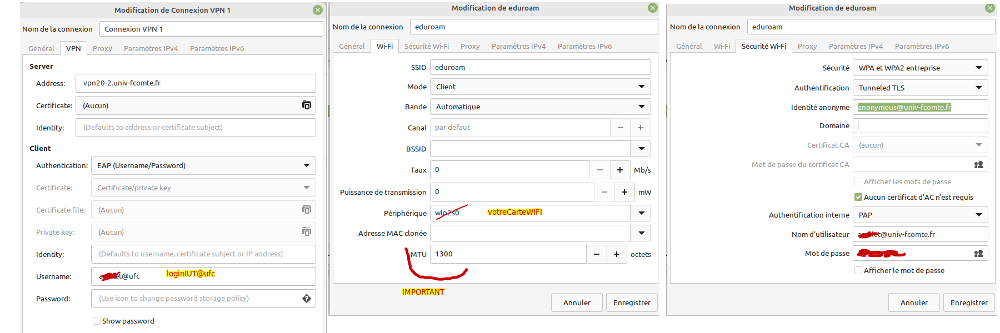

/ pour le système d’exploitation de
20 à 50 GO/home de 20 à 50
GOExemple : sur linuxMint
kubuntu debian
Mettre à jour les paquets(programmes, logiciels) puis
installer les bons paquets (programmes) depuis un terminal
# mettre à jour la machine
sudo apt update
sudo apt upgrade
# exemple
sudo apt install chromiumsudo apt install -y mariadb-server mariadb-client
# ou mysql-server (plus difficile à installer à cause des rêgles de sécurité sur les mots de passe)config de maria-db : Créer un compte utilisateur et une base de données
-- compte login (remplacer login et motdepasse) dans tout le script
-- mysql --user=login --password=motdepasse --host=localhost --database=BDD_login
CREATE DATABASE BDD_login;
CREATE USER 'login' IDENTIFIED BY 'motdepasse';
GRANT ALL PRIVILEGES ON *.* To 'login';
FLUSH PRIVILEGES;En 2023, certains étudiants ont du remplacer 'login' par
'login'@'localhost' sur MariaDB dans le script
ci-dessus
ATTENTION : mettre un mot de passe simple et différent de vos autres mots de passe car on écrit ce mot de passe dans les scripts (python …)
sudo mysql -u root -pExécuter le script ci dessus dans le terminal
Fermer la connexion sur mysql et tester la connexion avec le
nouveau compte avec l’instruction suivante modifiée avec vos
identifiants :
mysql --user=login --password=motdepasse --host=localhost --database=BDD_login
Remarque :
MySql est moins “strict” par défaut sur Windows et parfois sur Linux:
Alors que MySQL est sensible par défaut à la casse (au niveau des
noms de base et de table)dans la plupart des distributions Unix, il ne
l’est pas pour Windows! En revanche, concernant les noms de colonnes,
index, alias de colonnes, déclencheurs et procédures MySQL n’est pas
sensible à la casse tous systèmes confondus. En fait, tous ces noms sont
stockés en minuscules dans le dictionnaire de données.
La variable lower_case_table_names permet de forcer la
sensibilité à la casse pour les noms des tables et des bases de données
(si elle vaut 0, la sensibilité à la casse est active et les noms sont
stockés en minuscules; 1, pas de sensibilité à la casse et les noms sont
stockés en minuscules; 2, pas de sensibilité à la casse et les noms sont
stockés en respectant la casse). Je vous invite à positionner cette
variable à 0 de manière à homogénéiser le codage et à contrôler un peu
plus l’écriture de vos instructions SQL. De plus, c’est l’option par
défaut sur Linux.
SELECT @@lower_case_table_names; : Cette requête
retournera la valeur actuelle de la variable
lower_case_table_names qui doit être à
0
Pour vérifier le mode SQL en cours d’utilisation dans votre serveur
MySQL, vous pouvez exécuter la requête suivante :
SELECT @@sql_mode;.
Cette requête renverra la valeur actuelle de la variable
sql_mode, qui représente le mode SQL en cours
d’utilisation.
Le résultat sera une chaîne de caractères contenant les différents modes
SQL activés et leurs paramètres. Assurez-vous de trouver la valeur
ONLY_FULL_GROUP_BY dans la chaîne de caractères renvoyée.
Si ce mode n’est pas activé, cela signifie que MySQL peut être moins
strict en ce qui concerne la clause GROUP BY dans vos
requêtes, ce qui peut entraîner des résultats inattendus. Il est
possible que votre application fonctionne correctement sur votre
machine, mais rencontre des erreurs lorsqu’elle est exécutée sur une
machine de l’IUT.
En résumé, tester sur votre machine :
SELECT @@lower_case_table_names;
-- la réponse devrait être 0
SELECT @@sql_mode;
-- la réponse devrait contenir le mot clé ONLY_FULL_GROUP_BY
Si la configuration de MySQL n’est pas
bonne :
dir /s *my.ini* depuis la racine C:\find / -name '*my.cnf' 2>/dev/nullÉditer le fichier de configuration my.ini ou
my.cnf en tant que root. Dans ce fichier, sous la section
serveur identifiée par [mysqld] si elle existe, ajouter les
lignes ci-dessous (créer la section si elle n’existe pas):
[mysqld]
lower_case_table_names=0
local_infile=ON
sql_mode = "ONLY_FULL_GROUP_BY,STRICT_TRANS_TABLES,NO_ZERO_IN_DATE,NO_ZERO_DATE,ERROR_FOR_DIVISION_BY_ZERO,NO_ENGINE_SUBSTITUTION"
[mysql]
local_infile=ONPour connaître le dossier du fichier my.cnf
(Linux,MacOS) ou my.ini (Windows), exécutez la commande
mysql --help --verbose. L’information est généralement
affichée au début de la sortie. Sur Linux, utilisez sudo en
début de commande pour obtenir les privilèges de superutilisateur.
Vous pouvez vérifier l’encodage du serveur MySQL par défaut avec la
commande SQL SHOW VARIABLES LIKE 'character_set_%';. Cette
requête renvoie les variables liées à l’encodage dans MySQL, y compris
la variable character_set_server qui indique l’encodage du
serveur MySQL. Les dernières versions de MySQL utilisent par défaut
utf8mb4 qui convient parfaitement.
Télécharger looping-mcd avec le lien suivant :looping-mcd (logiciel windows des enseignants de toulouse)
installer wine pour exécuter le programme
looping-mcd.exe
sudo apt install wine
# telecharger looping-mcd.exe
# wine looping-mcd.exewine permet d’exécuter le logiciel looping-mcd avec
la commande wine looping-mcd.exe dans un terminal
il faut mettre dans le fichier .bashrc un lien avec
le chemin absolu sur le fichier looping-mcd.exe
exemple (si le fichier Looping.exe se trouve dans le
dossier /opt/looping-mcd)
cd
code .bashrc
alias looping='wine /opt/looping-mcd/Looping.exe'sudo apt install python3-pip
python --version
# sudo sudo ln -s /usr/bin/python3 /usr/bin/pythonPour votre machine personnelle, créer un compte sur le site jetbrains. Il faut compléter un formulaire avec vos références d’étudiant.
Télécharger la dernière version de pycharm et datagrip
/opt comme sur les machines de l’IUT (ATTENTION remplacer
les x.x.x par la version actuelle du logiciel pycharm ou datagrip)sudo mkir /opt
sudo tar xf pycharm-professional-202x.x.x.tar.gz -C /opt/
sudo tar xf datagrip-202x.x.x.tar.gz -C /opt/
rm datagrip-202x.x.x.tar.gz pycharm-professional-202x.x.x.tar.gz
sudo mv /opt/pycharm-202x.x.x/ /opt/pycharm/
sudo mv /opt/DataGrip-202x.x.x/ /opt/DataGrip/
sudo mkdir /opt/looping-mcd
sudo mv Looping.exe /opt/looping-mcd/
cd
subl .bashrc
alias looping='wine /opt/looping-mcd/Looping.exe'
alias datagrip='/opt/datagrip/bin/datagrip.sh'
alias pycharm='/opt/pycharm/bin/pycharm.sh'
#les icones
ls ~/.local/share/applications/Il faut maintenant impérativement utiliser le VPN. Une fois le VPN activé
Dans un terminal :
ssh votrelogin@gate-info.iut-bm.univ-fcomte.fr
sftp votrelogin@gate-info.iut-bm.univ-fcomte.fril faut remplacer gate-info par une machine de l’iut
Par exemple celles de la salle 009 : 912e009-01.iut-bm.univ-fcomte.fr 912e009-02.iut-bm.univ-fcomte.fr
Lien sur les informations du CRI : https://wifi.univ-fcomte.fr/eduroam.php
Lien
sur eduram https://cat.eduroam.org/
Voir pages 3 à 5 de ce document : https://wifi.univ-fcomte.fr/file/guide_utilisateur_eduroam_linux-20160104.pdf
doc VPN CRI

du -sk
du -ckps -ax
kill -9 PID
killall firefoxredémarrer le service
sudo systemctl restart mysql
éventuellement pour l’utilisateur root
USE mysql;
-- sur mysql
SELECT User, Host, plugin,authentication_string FROM mysql.user;Attention à la configuration de MySQL via le fichier my.ini =>
Je conseille l’installation de mariadb
voir la vidéo sur grafikart
Il est conseillé d’installer mariadb indépendamment de logiciel comme Xampp, Wamp…
Utilisation de scoop
Set-ExecutionPolicy -ExecutionPolicy RemoteSigned -Scope CurrentUser
Invoke-RestMethod -Uri https://get.scoop.sh | Invoke-Expression
scoop bucket add main
scoop install main/cmder-full
scoop install python
scoop install git
scoop install vscode
scoop install sublime-text
scoop bucket add extras
scoop install mariadbPour installer des programmes sur le système d’exploitation windows 11, je désire utiliser scoop, je désire des explications sur ce gestionnaire de programmes.
Comment utiliser mysql par l’intermédiaire de scoop ?
Comment configurer mysql comme un service après une installation avec scoop ?
Que veut dire l’instruction scoop bucket add extras
de ce que j’ai pu tester sur mysql, ouvrir une console sans être administrateur
mysql -u root # pour se connecter à mysql-- compte login (remplacer login et motDePasse) dans tout le script
-- mysql --user=login --password=motdepasse --host=localhost BDD_login --local_infile
CREATE DATABASE BDD_login;
CREATE USER 'login' IDENTIFIED BY 'motdepasse';
GRANT ALL PRIVILEGES ON *.* TO 'login';
FLUSH PRIVILEGES;mysql --user=login --password=motdepasse --host=localhost BDD_login --local_infile